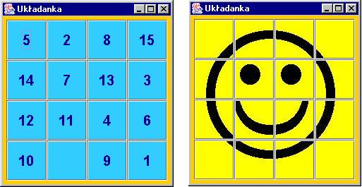
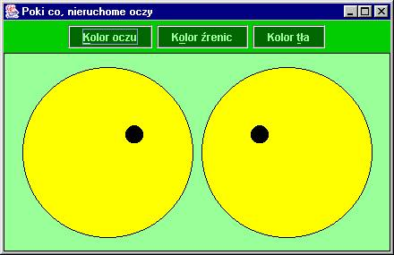
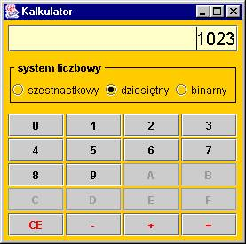
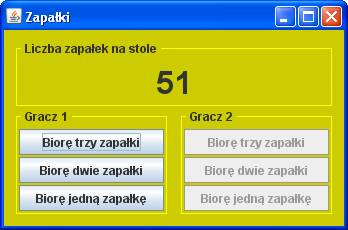

Po-PierwszoMajowy pochód rozk³adów...
GUI jako skorupki nie¿ywych jeszcze programów

Tylko skorupki!!!
Wygl±d, a nie dzia³anie
- Zadanie 1
Wykonaj GUI do popularnej w XX wieku analogowej uk³adanki.
W przypadku uk³adanki z liczbami, ka¿dy z elementów ma byæ kwadratowy, a po³o¿enie ka¿dej z liczb od 1 do 15 ma byæ wyznaczone losowo.
W przypadku uk³adanki z u¶miechem, odpowiednie pliki z czê¶ciami sk³adowymi znajdziesz w katalogu FTP(public)/dc/GUI/usmiech.

- Zadanie 2 (poniek±d powtórka z rysowania)
Wykonaj interfejs u¿ytkownika programu, który zawieraæ bêdzie oczy wodz±ce za kursorem myszy. Poni¿ej zamieszczono bazow± propozycjê interfejsu.

- Zadanie 3
Wykonaj interfejs prostego prostego kalkulatora, który pomimo swej banalno¶ci
pozwala na liczenie w typowych dla informatyków systemach liczbowych.
Poni¿ej przedstawiono wygl±d kalkulatora, gdy uruchomimy program z parametrami: 10 1023.

- Zadanie 4
Wykonaj interfejs do gry w zapa³ki. Wygrywaæ bêdzie ten gracz, który we¼mie ostatni± zapa³kê. Ka¿dy z graczy mo¿e wzi±æ 1, 2 lub 3 zapa³ki.
